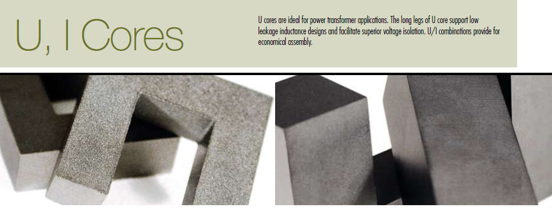

high-frequency, high-voltage transformer that will be used in a X-Ray device
Copyright © 2016 Hyuruk
09-Apr-2016 11:46:22
Abstract
In this report, it is supposed to design a high-frequency, high-voltage transformer that will be used in a X-Ray device.The transformer design will be given step by step.
Table of Contents
The specs of the transformer are as follows: Single Phase, High Frequency High Voltage Transformer Primary Winding Voltage ± 417 V (peak to peak 834 V for pulsing) Secondary Winding Voltage ± 12.5 kV (peak to peak 25 kV for pulsing) Rated Power 30 kW (for maximum 100 milisecond) Switching Frequency Minimum 100 kHz Ambient Temperature 0-40 °C
%Core Selection by WaAc product % The power handling capacity of a transformer core can also be determined by its % WaAc product, where Wa is the available core window area, and Ac is the effective % core cross-sectional area. % Area Product Distribution (WaAc) % WaAc = (Po * Dcma) / (Kt * Bmax * f) % where % WaAc = Product of window area and core area (cm4) % Po = Power Out (watts) % Dcma = Current Density (cir. mils/amp) % Bmax = Flux Density (gauss) % ƒ = frequency (hertz) % Kt = Topology constant (Full-bridge = 0.0014) Po = 30 * 10^3; f = 100 * 10^3; Kt = 0.0014; Dcma = 4.5 * 10^2 * 1.2732; % to convert square mils to circular mils multiply by 1.2732 % For ex. 500 cm/A ~= 400 A/cm^2 Bmax = 0.1 * 10^4; WaAc = Po * Dcma / (Kt * Bmax * f);
Using the equation shown above, the WaAc product is calculated. WaAc = 122.7729 Then the Area Product Distribution (WaAc) Chart is used to select the appropriate core. From the Magnetics Ferrite Catalog (2013) U core is selected. The detail are given below.

U cores are ideal for power transformer applications. The long legs of U core support low leakage inductance designs and facilitate superior voltage isolation.